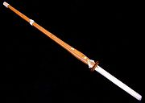
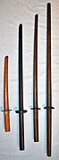
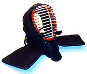
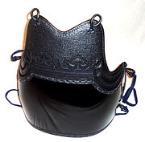
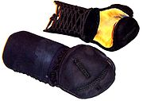
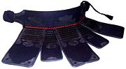

- Kendo
- Kendo is a modern Japanese martial art that uses bamboo swords as well as protective armor.
- Kendōka
- Practitioners of kendo are called kendōka (剣道家), meaning "someone who practices kendo".
- Equipment
-
Photos
| Shinai
|
Bokudo |
Men |
Do |
Kote
|
Tare
|
|  |
 |
 |
 |
 |
 |
- Rules of competition
-
- Men-bu, the top or sides of the head protector (sho-men and sayu-men).
- Kote-bu, a padded area of the right or left wrist protector (migi-kote and hidari-kote).
- Do-bu, an area of the right or left side of the armour that protects the torso (migi-do
and hidari-do).
- Tsuki-bu, an area of the head protector in front of the throat (Tsuki-dare).
- Grades
-
- 1-dan; Requirement:1-kyu;
Age requirement: at least 13 years old
- 2-dan; Requirement:At least 1 year of training after receiving 1-dan
- 3-dan; Requirement:At least 2 year of training after receiving 2-dan
- 4-dan; Requirement:At least 3 year of training after receiving 3-dan
- 5-dan; Requirement:At least 4 year of training after receiving 4-dan
- 6-dan; Requirement:At least 5 year of training after receiving 5-dan
- 7-dan; Requirement:At least 6 year of training after receiving 6-dan
- 8-dan; Requirement:At least 10 year of training after receiving 7-dan; Age
requirement: At least 46 years old